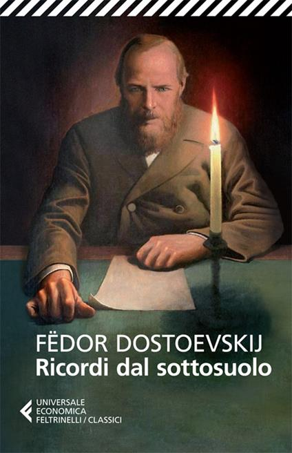

Un uomo senza nome, ex funzionario chiuso in un isolamento quasi totale, si rivolge direttamente al lettore per esporre le proprie idee corrosive sulla ragione, la felicità e il concetto stesso di progresso umano. La prima parte del romanzo è un lungo monologo filosofico e rancoroso; la seconda ripercorre alcuni episodi della sua vita passata, rivelando quanto quel rancore affondi le radici in umiliazioni concrete. Considerato un precursore dell'esistenzialismo, resta uno dei ritratti più impietosi mai scritti della mente umana.
L'ho acquistato insieme a Il Giocatore, in un momento in cui esitavo tra questo e Notti bianche. È stato il retro della copertina a farmi scegliere Ricordi dal sottosuolo: vi avevo colto un richiamo a temi divini e spirituali che mi ha immediatamente convinta, alimentando aspettative piuttosto elevate.
L'ho divorato nell'arco di un solo fine settimana. Ne sono rimasta profondamente colpita, al punto da sottolineare numerosi passaggi che mi hanno particolarmente catturata.
Devo ammettere che la prima parte mi ha conquistata soprattutto per la sua scorrevolezza, grazie a capitoli brevi — una struttura che apprezzo particolarmente. La seconda parte, invece, mi ha offerto una riflessione più profonda e stratificata. Ne sono rimasta talmente soddisfatta da essermi ritrovata, da allora, a consigliarlo e prestarlo a diverse persone.
"Del resto, di che cosa può parlare col massimo piacere una persona come si deve?
Risposta: di se stesso.
E così vi parlerò di me stesso."
"Avere una coscienza troppo lucida è una malattia, una vera malattia nel pieno senso della parola."
"Ma signori miei, a chi può venire in mente di vantarsi delle proprie malattie, o addirittura pavoneggiarsi?
Tutti lo fanno, e io forse più di tutti quanti."
"Ogni forma di coscienza è una malattia."
"Ma via, ribellarsi non è possibile: due più due fa quattro! La natura non domanda mica il vostro permesso;
lei non s'interessa mica dei vostri desideri, nè se vi piacciano o non vi piacciano le sue leggi.
Voi siete obbligati ad accettarla così com'è."
"Il due più due fa quattro è una cosa assolutamente insopportabile.
Due più due fa quattro, secondo me, è una vera e propria impertinenza.
Ma se vogliamo dare a ciascuno il suo, ebbene, anche due più due cinque
qualche volta può essere una cosetta graziosissima. "
"E come mai voi siete così fermamente, così solennemente convinti che soltanto ciò che è normale e positivo,
in una parola soltanto ciò che apporta prosperità, è vantaggioso per l'uomo?"
"Per giunta un uomo non può mai costituire un esempio per una donna."
"Tu donna, dài tutto, sacrifichi tutta la tua libertà."
"Il padre vuol sempre più bene alle figlie che non la madre."
"L'uomo preferisce sempre ricordare il proprio dolore piuttosto che la felicità."
"Perfino il dolore, quando lo si divide con qualcuno, fa bene talvolta; e del resto dove non c'è dolore?"
"Per quanto mi riguarda personalmente io altro non ho fatto nella mia vita se non portare all'estremo ciò che voi avete osato portare soltanto fino a metà."
"Noi siamo già nati morti, già da un pezzo non siamo più generati da padri viventi, e la cosa ci piace sempre di più.
Cominciamo a prenderci gusto. Ben presto inventeremo il modo di nascere da una qualche idea.
Ma ora basta; non voglio più scrivere 'dal sottosuolo'. "